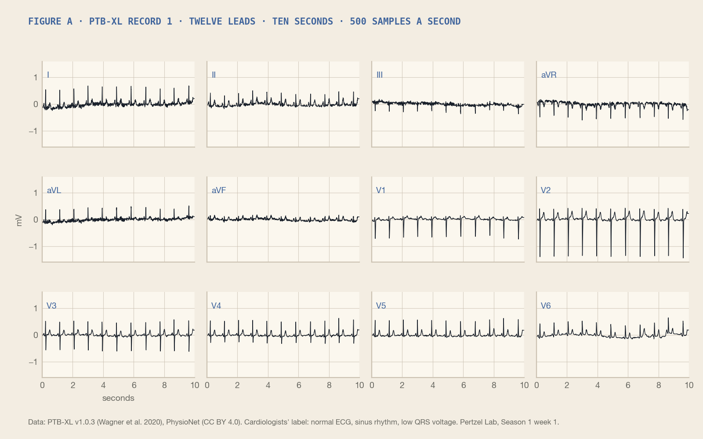
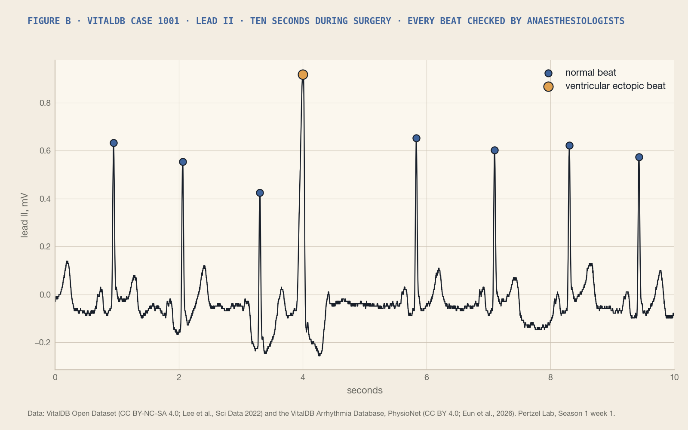
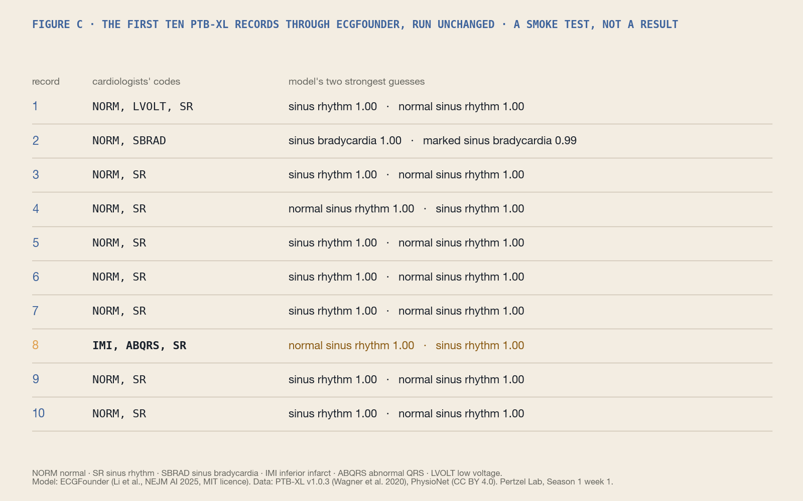

Pertzel Lab · Season 1 · Announcement
Can a public AI model read an ECG as well as the doctors who labelled it?
I'm starting a one-person research lab, and this is the first thing I'm doing with it.
There's a published AI model called ECGFounder that was trained on ten million ECGs. Its authors say it can read a 12-lead ECG and pick out 150 different things, from a normal rhythm to signs of an old heart attack. The model is free, the weights are public, and it runs on my laptop. I've already run it on ten hospital ECGs this week and watched it answer.

What I'm doing over the rest of this six-week season (it ends on 22 November) is simple to say. First, I take the hospital dataset the authors scored their model on (PTB-XL, about 22,000 ECGs read by cardiologists) and check that I get the number they published. That's a replication: does their claim hold up when someone outside their lab runs it? Then I take a dataset the model has never seen: ECGs recorded during surgery, with stretches where every heartbeat was checked by anaesthesiologists, released this year. And I ask the real question. When this model leaves home, how much worse does it get? And when it's confident, should you believe it?

Why do I care? Partly because it's a bit of fun. I get to do cutting-edge data analysis on real data with tools that didn't exist two years ago. Partly because I'm really passionate about health and medicine. Partly because, from what I can see, no one seems to publish this kind of measurement. Models get trained and announced; what happens to them on new data, in new hospitals, on new devices, mostly goes unreported. If you read ECGs, you get an outside check on a model people are already using. If you build with cheap sensors, you get the answer to whether a fifty-dollar board plus a public model means anything. That's the gap I want to work in. And partly because it feels like, with the tools around now, one person can genuinely be a research lab. That's just cool and exciting. And being able to share what I find with anyone in the world is incredible.
After this season, the plan is to bring it to my own chest. A chest strap you can buy, a small sensor board wired up to a microcontroller by me, and the same model run on my own recordings, so we can see how far a hospital-grade model travels to a sensor that costs fifty dollars. That's Season 2.

Figure C as text
| Record | Cardiologists' codes | Model's two strongest guesses |
|---|---|---|
| 1 | NORM, LVOLT, SR | sinus rhythm 1.00 · normal sinus rhythm 1.00 |
| 2 | NORM, SBRAD | sinus bradycardia 1.00 · marked sinus bradycardia 0.99 |
| 3 | NORM, SR | sinus rhythm 1.00 · normal sinus rhythm 1.00 |
| 4 | NORM, SR | normal sinus rhythm 1.00 · sinus rhythm 1.00 |
| 5 | NORM, SR | sinus rhythm 1.00 · normal sinus rhythm 1.00 |
| 6 | NORM, SR | sinus rhythm 1.00 · normal sinus rhythm 1.00 |
| 7 | NORM, SR | sinus rhythm 1.00 · normal sinus rhythm 1.00 |
| 8 | IMI, ABQRS, SR | normal sinus rhythm 1.00 · sinus rhythm 1.00 |
| 9 | NORM, SR | sinus rhythm 1.00 · normal sinus rhythm 1.00 |
| 10 | NORM, SR | sinus rhythm 1.00 · normal sinus rhythm 1.00 |
What I'll put out, by the end of November: the code, so anyone can rerun it; a short paper on a preprint server; the figures; and the week-by-week record of how it went, including what broke.
What I don't know yet: whether the model holds up against what the anaesthesiologists checked, or whether it quietly falls apart on data it wasn't trained on. Whether my own cheap recordings will be good enough to test it on at all. And whether anyone will find this interesting. I'm going to try anyway.